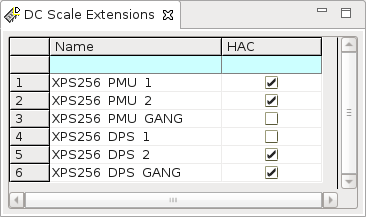

DC Scale Extensions editor
The DC Scale Extensions editor is used to configure the utilization of upgrade licenses for some DC Scale card features. The settings in this editor apply only to the currently loaded device.

DC Scale Extensions that require upgrade licenses are currently available only for the DC Scale XPS256 card.
The utilization of some upgrade features is defined only by the source code of the test methods and cannot be derived from the pin settings. The upgrade features must therefore be enabled or disabled manually in the DC Scale extensions editor.
The settings done in this editor are stored in the Pin configuration file and can be exported to a device license file using the Testflow Analyzer Tool (TAT).
The DC Scale Extensions editor consists of the following cells:
| Column | Supported card | Description |
|---|---|---|
| Name | A descriptive name for the pin. | |
| HAC | XPS256 |
Enables forcing, clamping, and measuring voltages in the high‑accuracy mode using the 1.5 V range. For more information, refer to High‑accuracy voltage mode in XPS256 specific setup tasks. |
The DC Scale Extensions editor handles the upgrade licenses for the PMU operating mode and for the DPs operating mode.
Functional changes
- Introduced in SmarTest 7.4.0
- SmarTest 7.5.0: Support for FVI16 added: New columns "60V Range" and "120 V mode".
- SmarTest 7.10.1: Support for XPS256 added: New columns "HAC".